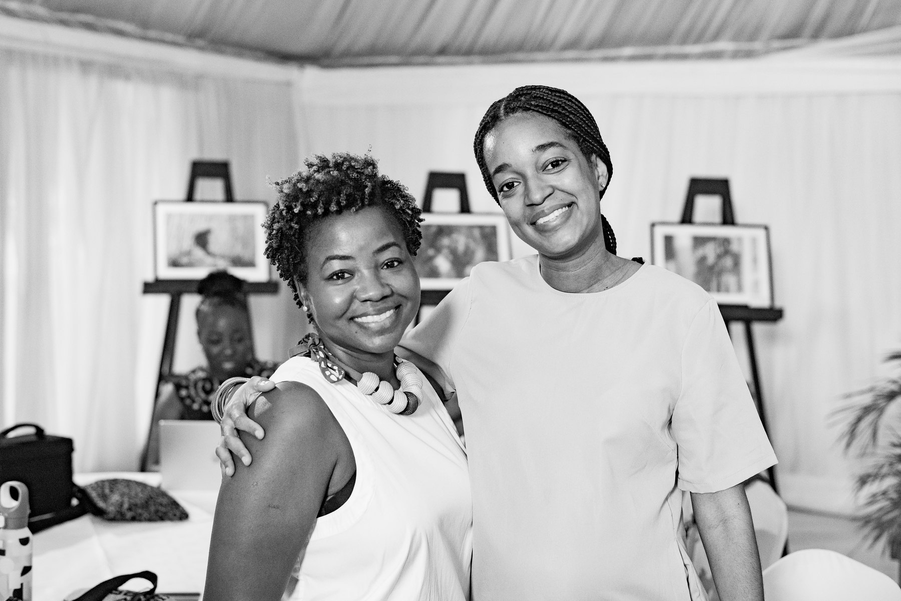
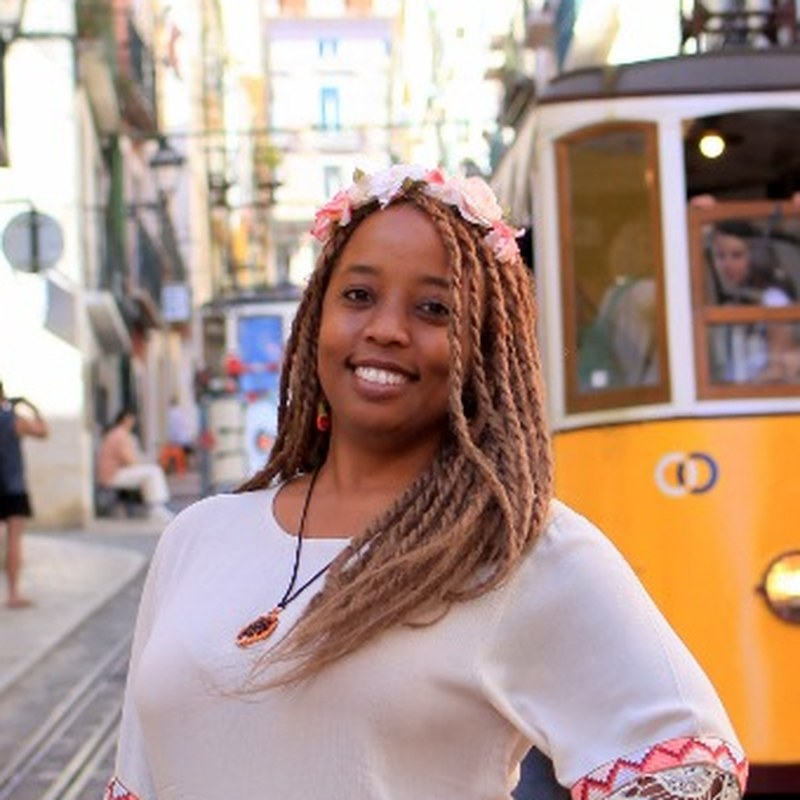

Ayesha Constable
Co-founder
About GirlsCARE
We are a feminist-led climate justice organisation based in Jamaica, championing gender-responsive climate justice across the Caribbean. Girls, young women, and communities are at the heart of our work.

Who we are
GirlsCARE provides a platform for training, mentoring, and upskilling girls and young women so they can advocate for climate-smart and gender-just solutions.
We see girls, young women, and communities most affected by inequality and climate change as leaders, knowledge holders, and agents of change, not simply recipients of support.
Our work is rooted in Jamaica and reaches across the Caribbean. We connect learning and leadership with the lived realities, priorities, and knowledge of the people shaping their communities.
Our values
Care, dignity, solidarity, and self-determination guide how we work. We believe lasting change is built through collective action and locally grounded solutions.
We recognise and challenge the structural inequalities shaping the lives of girls and young women. Our work centres their rights and agency.
Gender does not operate in isolation. Race, class, age, sexuality, geography, disability, economic status, and other identities and structural inequalities shape people's experiences and opportunities. We create spaces where diverse experiences and perspectives are recognised and valued.
Relationships, solidarity, and networks matter. Change grows stronger when people organise, learn from one another, share resources, and build collective power.
Care for ourselves, one another, our communities, and our environments is fundamental to sustainable activism and leadership. We attend to emotional, psychological, social, and material well-being as an ongoing organisational and movement practice, not only when a crisis occurs.
Explore Care CollectiveWe learn from communities, lived experience, one another, and practice. We reflect on what works and what does not, and share knowledge so it can contribute to wider movements for change.
Our approach
We combine capacity building, mentorship, climate justice education, feminist analysis, storytelling, community care, and leadership development. Eight principles shape how we do that work.
We begin with the lived realities, priorities, and leadership of girls, young women, and communities. Rather than starting with a predetermined technical solution, we make space for people to identify what matters, build their capacity, and shape the response.
Gender justice, climate justice, human rights, sexuality and reproductive justice, queer justice, economic resilience, and community well-being are connected. Our intersectional approach recognises that people experience these issues together, rather than in separate sectors.
We invest in young women's agency and leadership. Beyond services or information, we support pathways to becoming organisers, advocates, mentors, decision-makers, and movement leaders.
Individual skills are only part of the story. Peer networks, mentorship, relationships, collective learning, and opportunities to organise together connect personal leadership to wider community and movement power.
We connect global climate justice conversations to everyday realities: livelihoods, hurricanes, fishing, food security, income, safety, health, land, water, and community resilience.
Care is not an optional wellness activity after the work is done. It helps make leadership and movements sustainable. Alongside what we want to change, we ask how to sustain the people doing the work and care for the people we serve.
We connect community experience with wider climate, feminist, and human rights conversations. Young women and community actors gain pathways into decision-making spaces, while bringing community knowledge and priorities into those conversations.
Mentorship, community engagement, peer learning, movement connections, and care depend on trust built over time. This matters especially for communities historically excluded from decisions or approached primarily as recipients of development interventions.
Our team
Meet our founders and core team, working together to support GirlsCARE's programmes, relationships, and community action.
Co-founder

Co-founder
Core team
Core Team
Core Team

Core Team
Looking ahead
We are evolving from a mentorship initiative into a broader platform for feminist climate leadership, community resilience, and care. These current and emerging priorities guide that work.
Continuing to provide mentorship, knowledge, networks, and opportunities for young women to engage in climate justice advocacy.
Recognising that resilience includes emotional wellbeing, connection, rest, healing, and psychosocial support, particularly for women and girls experiencing climate-related shocks.
Expanding practical support and training for women whose livelihoods are vulnerable to climate and disaster impacts, including farmers and other community members.
Providing practical and longer-term support to girls affected by disasters, including educational and wellbeing support.
Continuing photography, storytelling, and other creative methods so women affected by climate change can document their experiences and contribute to adaptation conversations.
Be part of the work
Explore our programmes, connect with the network, or share your experience and support for feminist climate justice in the Caribbean.